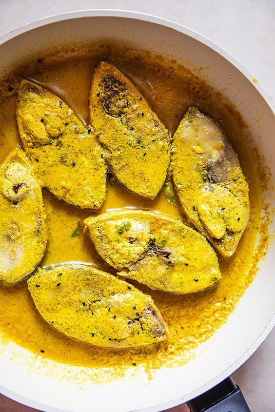
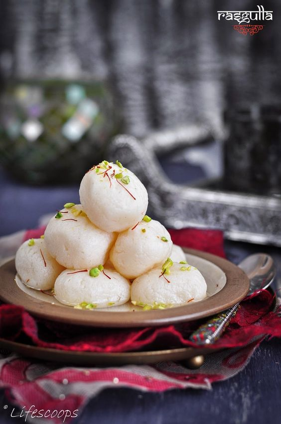

500g fish (such as rohu or catla), cut into pieces
2 potatoes, peeled and cubed
1 onion, finely chopped
2 tomatoes, chopped
1 tablespoon ginger-garlic paste
1 teaspoon turmeric powder
1 teaspoon red chili powder
1 teaspoon cumin seeds
1 teaspoon coriander powder
1/4 cup chopped coriander leaves
Salt to taste
Oil for cooking
Instructions:
Heat oil in a pan and fry the fish pieces until golden brown. Remove and set aside.
In the same oil, add cumin seeds and sauté onions until translucent.
Add ginger-garlic paste and cook for a minute.
Add tomatoes, turmeric powder, red chili powder, coriander powder, and salt. Cook until tomatoes are soft.
Add potatoes and enough water to cover the mixture. Simmer until potatoes are cooked.
Add fried fish pieces and cook for another 10 minutes.
Garnish with coriander leaves and serve hot with rice.
Shorshe Ilish

Shorshe Ilish Recipe:
Ingredients:
4-5 pieces of Hilsa fish (Ilish)
1/2 cup mustard seeds, soaked and ground into a paste
2 green chilies, slit
1 tablespoon mustard oil
1/2 teaspoon turmeric powder
1/2 teaspoon red chili powder
1/2 teaspoon sugar
Salt to taste
1/2 cup water
Instructions:
Marinate the Hilsa fish with turmeric powder and salt.
Heat mustard oil in a pan and lightly fry the fish pieces. Remove and set aside.
In the same pan, add the mustard seed paste and sauté for a few minutes.
Add green chilies, red chili powder, sugar, and salt. Cook for a minute.
Add water and bring it to a boil.
Gently add the fried fish pieces into the pan and simmer for 10-15 minutes until the fish is cooked and the sauce thickens.
Serve hot with steamed rice.
Rasgulla

Rasgulla Recipe:
Ingredients:
1 liter milk
2 tablespoons lemon juice or vinegar
1 cup sugar
2 cups water
1/2 teaspoon cardamom seeds (optional)
Instructions:
Heat the milk in a pan until it comes to a boil. Add lemon juice or vinegar to curdle the milk. Strain the curdled milk through a cheesecloth to separate the curds from the whey.
Rinse the curds under cold water to remove the acidic taste. Squeeze out excess water and hang the cheesecloth for 30 minutes to drain completely.
Knead the chenna (paneer) for about 5-7 minutes until it becomes smooth and free of lumps.
Shape the chenna into small balls.
In a separate pan, make a sugar syrup by boiling water and sugar until the sugar dissolves completely.
Add the chenna balls to the boiling syrup and cook for 15-20 minutes on medium heat until the balls become soft and spongy.
Cool the rasgullas in the syrup and refrigerate before serving.